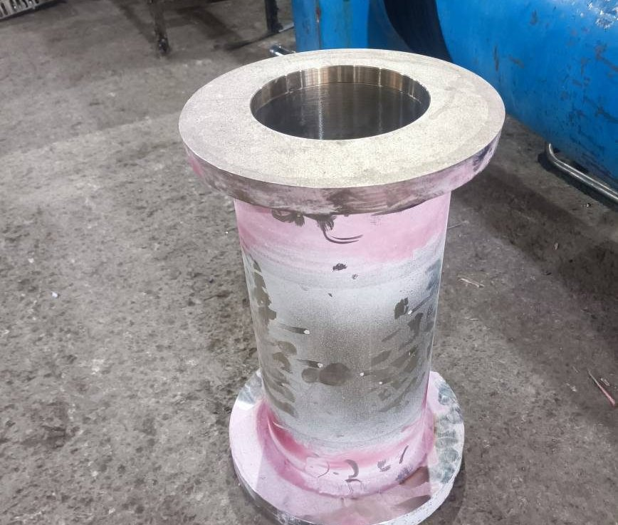

TIG and MIG welding
Stainless steel, aluminium and welded structures
TIG and MIG welding of stainless steel and 6000-series aluminium, fabrication and assembly of welded structures for machines, and large platform structures — with VT, PT and phased-array weld testing on request, from drawing to delivery.
- Processes: TIG and MIG (argon shielded)
- Materials: stainless steel, 6000-series aluminium
- Weld testing: VT · PT · PAUT and other tests as required

Welding and welded fabrication at HyperFab
Argon-shielded welding — TIG (GTAW) and MIG (GMAW) — is the main way to join stainless steel and aluminium in machine and equipment building. TIG gives clean, precise welds on thin sheet and sensitive parts; MIG is faster for long and structural welds. HyperFab does both on stainless steel and 6000-series aluminium.
HyperFab’s work is not just laying welds; it is building and assembling the project from drawing to delivery. That covers cutting and preparing parts, fixturing, welding with distortion control, weld finishing and testing. HyperFab has built many units for the medical and marine industries, where weld cleanliness and corrosion resistance are critical.
The experience goes beyond small parts. HyperFab has built large platform structures, including a framed chassis mounted on wheels that runs on rails — a structure where flatness, alignment and dimensional accuracy over long lengths decide everything.



HyperFab welding services
TIG welding of stainless steel
Clean, precise welds on stainless steel for medical, food and marine equipment, with heat control to preserve corrosion resistance.
6000-series aluminium welding
TIG and MIG welding of 6000-series alloys such as 6061 and 6063, for chassis, frames and light structures.
Welded machine structures
Chassis, frames, housings and enclosures for many kinds of machines in stainless steel or aluminium, from cut parts to assembled structure.
Large platform structures
Large platforms and framed chassis, including a structure mounted on wheels that runs on rails.
Medical and marine industries
Many units built for medical equipment and marine applications, meeting those industries’ cleanliness and corrosion requirements.
Weld testing
Visual testing (VT), liquid penetrant (PT), phased-array ultrasonics (PAUT) and other tests on request.


Built to your drawings
For welded structures, the structural design is the client’s, and HyperFab fabricates to your approved drawings. Before work starts, the drawings are reviewed for manufacturability: welding sequence, joint access, distortion control and tolerances that can realistically be held. Anything worth flagging is discussed with you before fabrication.
For large and platform structures, complete approved drawings are essential before fabrication starts. HyperFab takes responsibility for fabrication, follow-up and quality control through to delivery.
Weld tests
Tests are carried out on request, to suit the project’s requirements.
| Test | What it checks |
|---|---|
| VT — visual testing | Weld shape and size, surface cracks, undercut, spatter and visible defects |
| PT — liquid penetrant | Surface-breaking cracks and discontinuities; suited to non-magnetic stainless steel and aluminium |
| PAUT — phased-array ultrasonics | Internal weld defects such as lack of fusion, internal cracks and porosity, with a cross-section image of the weld |
| Other tests | As the project and client require |


How a welding project runs
Send drawings
Send the structure or part drawings, material, quantity and required tests, or describe them by phone.
Manufacturability review
Welding sequence, joint access and distortion control are reviewed.
Quotation
Priced by material, weld length and type, structure size and requested tests.
Fabrication and welding
Parts are prepared, fixtured, welded and finished as needed.
Testing and delivery
Requested tests are carried out and the structure is delivered.
Why trust HyperFab with welding
Engineering before welding
Welding sequence and fixturing are planned before work starts so the structure stays flat and true to the drawing.
Experience in demanding industries
Many units for medical and marine use, plus large platform structures on wheels and rails.
Quality you can verify
VT, PT and PAUT on request: weld quality is proven by testing, not by words.
Frequently asked questions
Does HyperFab do TIG welding of stainless steel?
Do you weld 6061 and 6063 aluminium?
TIG or MIG — which is better?
Do you design the structure too?
Which weld tests do you offer?
Do you build large structures?
Tell us about your welding project
Send the structure drawings or call. HyperFab’s industrial projects specialist answers by phone.